第二次世界大戦と日本
 いっしょに
いっしょに読もう！
第二次世界大戦の勃発
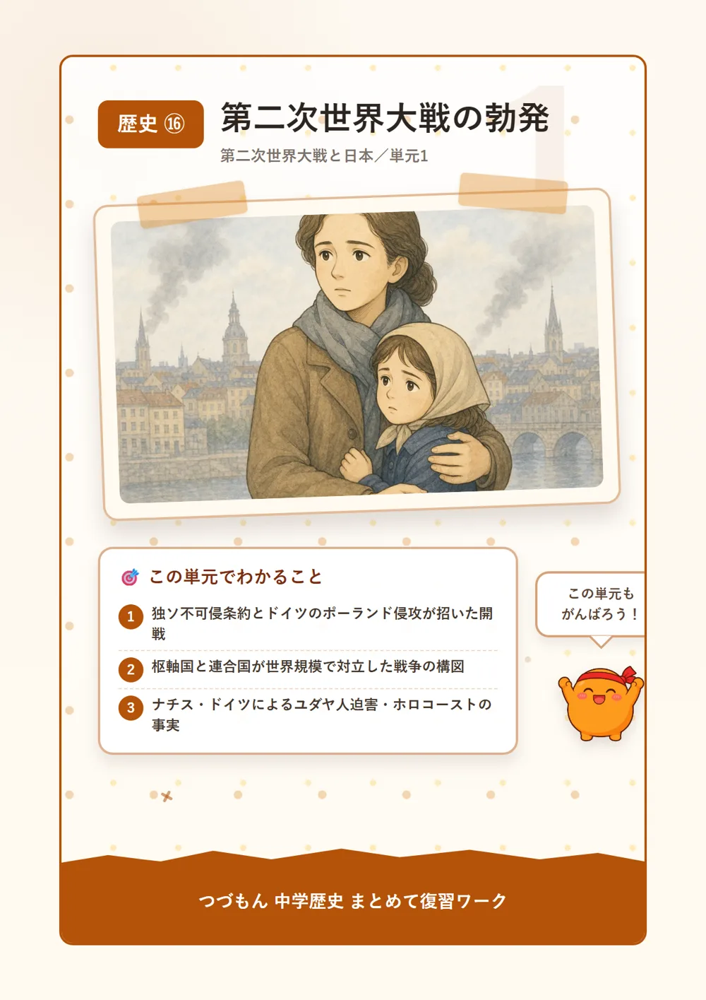
1独ソ不可侵条約とポーランド侵攻
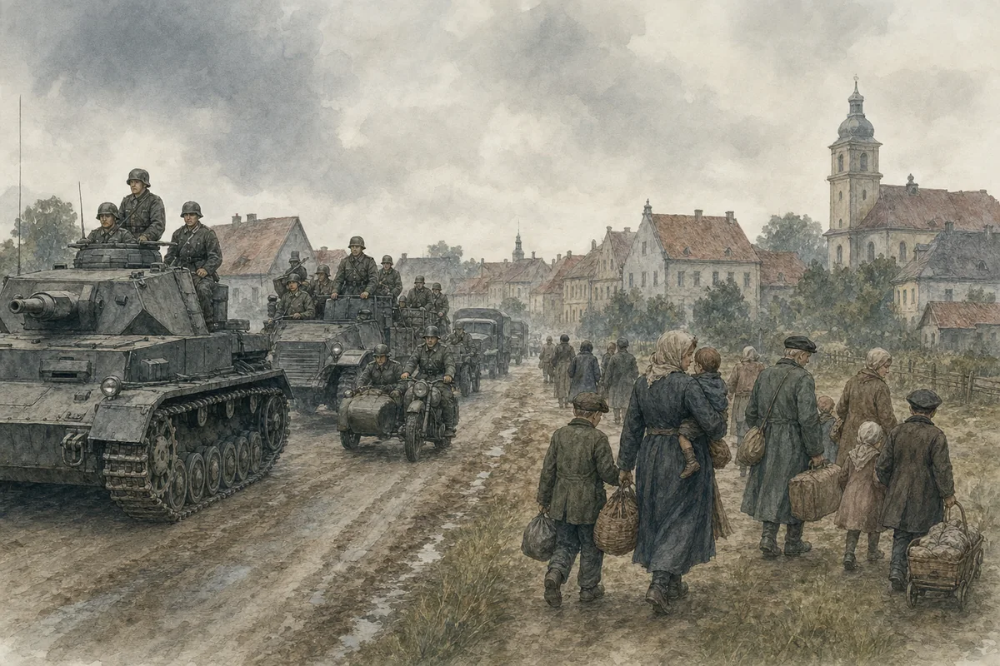
1939年8月、対立していたはずのドイツとソ連が、「お互いに戦争をしない」と約束する独ソ不可侵条約を結んだんだ。この条約でうしろを心配しなくてよくなったヒトラーは、同年9月1日、ポーランドへの侵攻に踏み切ったよ。これに対してイギリスとフランスがドイツに宣戦布告し、こうして第二次世界大戦が始まってしまったんだ。たった一つの条約が、大きな戦争のきっかけになったんだね。
2枢軸国と連合国、そして世界大戦へ
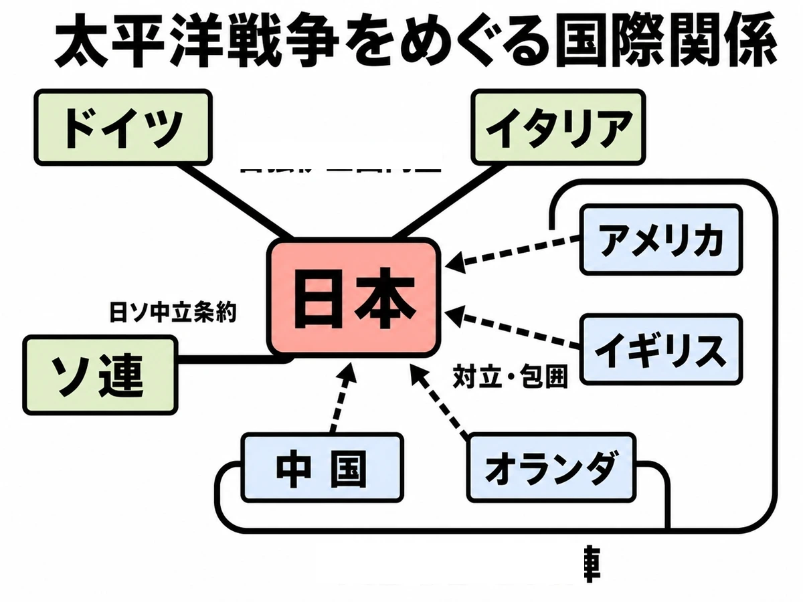
1940年、ドイツはフランスを降伏させて勢いに乗り、同じ年、日本・ドイツ・イタリアの3か国は日独伊三国同盟を結んで枢軸国と呼ばれる側の中心になった。これに対してアメリカ・イギリス・ソ連・中国などは連合国としてまとまっていったんだ。さらに1941年6月、ドイツは条約を破ってソ連に攻め込む独ソ戦を始め、戦争はどんどん世界規模に広がっていったんだよ。
3ホロコースト
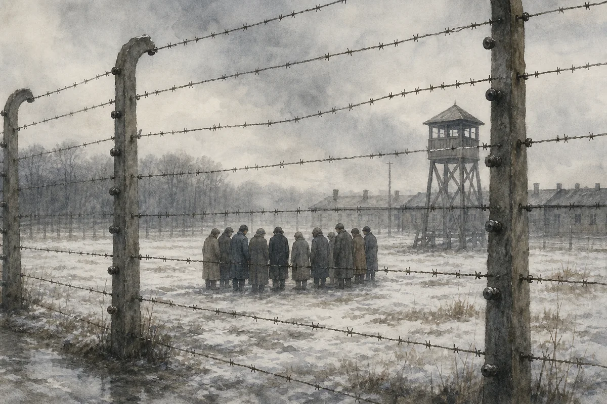
この戦争の裏で、ナチス・ドイツはユダヤ人を「敵」として計画的に迫害する恐ろしい政策を進めていた。これをホロコーストと呼ぶよ。アウシュビッツをはじめとする強制収容所に送られた人々の多くが命を奪われ、その数はおよそ600万人にものぼるとされているんだ。二度とこうしたことが起きないように、歴史からしっかり学んでおきたいね。

太平洋戦争と日本の敗退
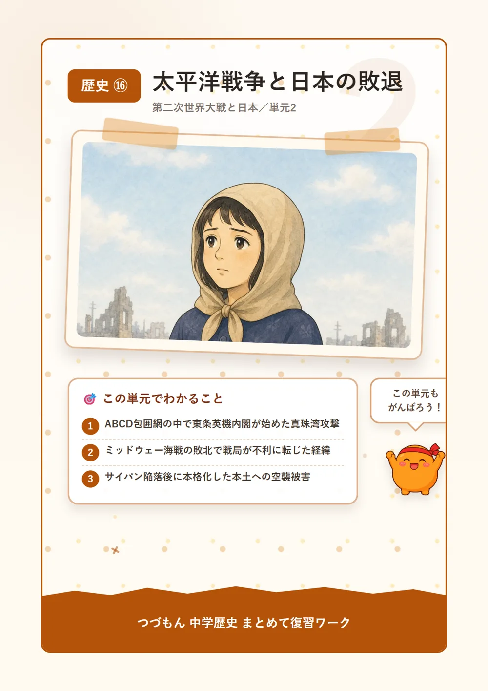
1真珠湾攻撃と太平洋戦争の始まり
日本はアメリカ・イギリス・中国・オランダによる石油や鉄の輸出停止、いわゆるABCD包囲網で経済的に追いつめられていた。東条英機内閣はこの状況を打開しようと、「アジアを欧米から解放する」と唱える大東亜共栄圏を掲げて開戦を決断したんだ。1941年12月8日、日本海軍はハワイの真珠湾を奇襲し、太平洋戦争が始まったよ。
2ミッドウェー海戦と戦局の転換
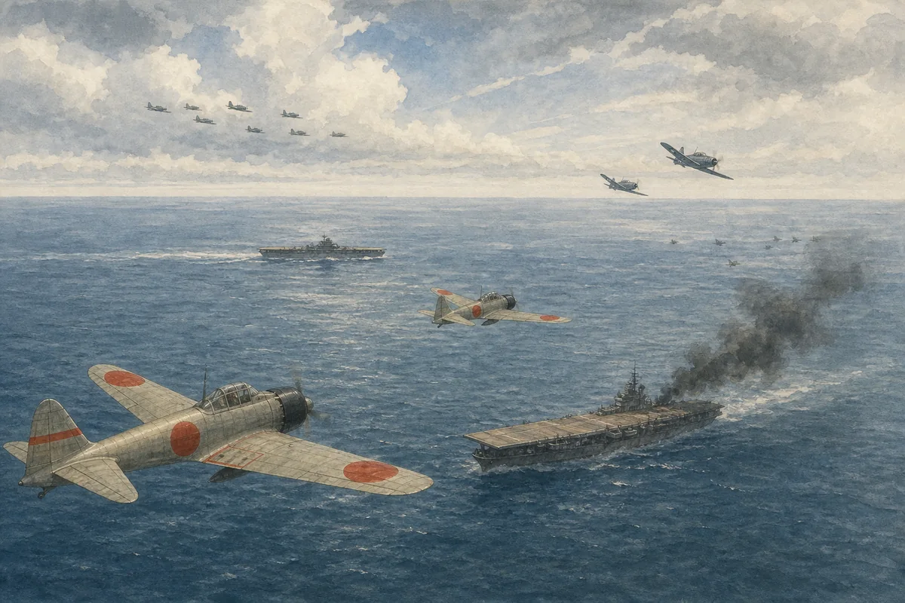
開戦当初こそ優勢だった日本だけど、1942年6月のミッドウェー海戦で主力空母4隻を失う大敗北を喫し、そこから戦況は一気に不利になっていったんだ。さらにガダルカナル島の戦いでは、日本軍は初めて撤退に追い込まれてしまう。攻める側から守る側へ、日本の立場が大きく変わってしまった瞬間だったんだね。
3サイパン陥落と本土空襲
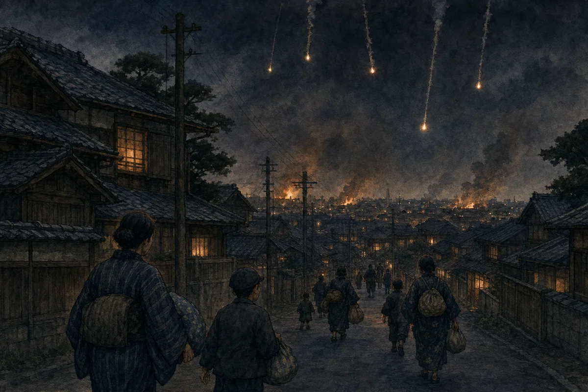
1944年、サイパン島が陥落すると、日本本土はアメリカの爆撃機B-29の航続距離に入ってしまい、責任を取る形で東条内閣は退陣した。そして1945年3月10日、東京大空襲で東京の下町が焼夷弾によって焼き尽くされ、一夜にして多くの命が失われたんだ。空の上からの戦争の被害が、日本国内にも直接及ぶようになっていったよ。
4沖縄戦
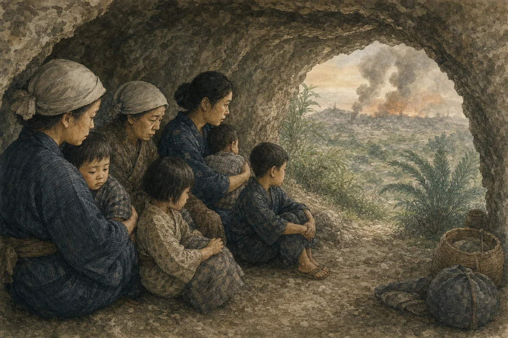
1945年4月から6月にかけて、日本本土で唯一の地上戦となる沖縄戦が行われた。看護要員として動員された女子学生たち「ひめゆり学徒隊」をはじめ、多くの沖縄県民が戦いに巻き込まれ、県民の4分の1以上が命を落としたとされているんだ。戦争は兵士だけでなく、そこに暮らす人々の日常をも奪ってしまうことを、心にとめておきたいね。
銃後の苦しみと総動員
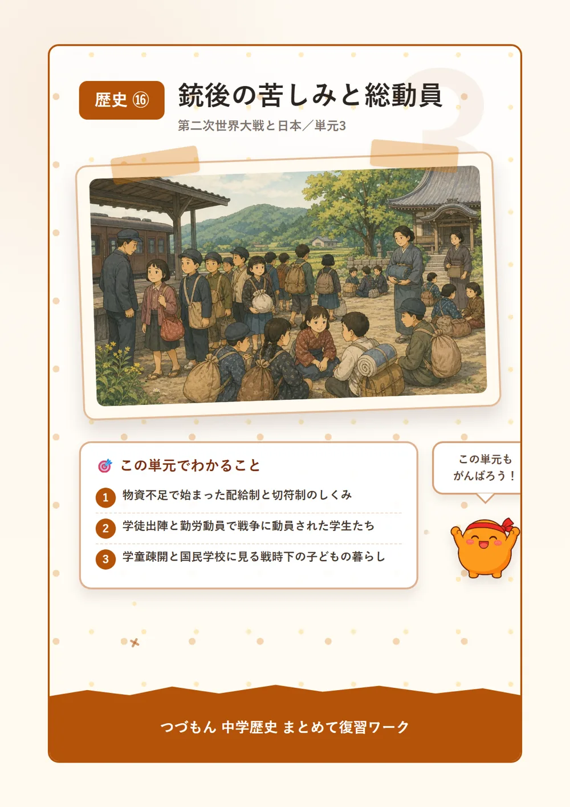
1配給制と切符制
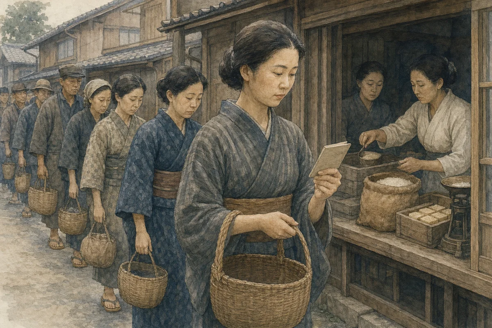
戦争が長引くと、物資はどんどん不足していった。そこで国は米や砂糖などを国民に割り当てて分配する配給制を始めたんだ。1940年からは、衣料品や砂糖などをチケットと引きかえに受け取る切符制も組み合わされ、限られた物資を何とかやりくりする暮らしが続いたよ。今のように、お店に行けば何でも買える時代とはまったく違っていたんだね。
2学徒出陣と勤労動員
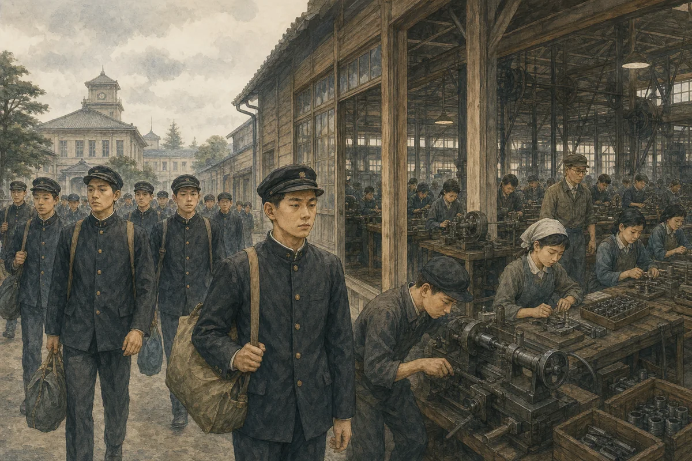
兵力が足りなくなると、1943年からは文系の大学生たちが繰り上げ卒業のまま戦場に送られる学徒出陣が始まった。同じころ、出征した男性の代わりに工場で働く人手も足りなくなり、中学生や女学生までもが軍需工場で働く勤労動員にかり出されたんだ。学生たちの学ぶ時間や日常が、戦争によって次々と奪われていった時代だったんだよ。
3学童疎開と国民学校
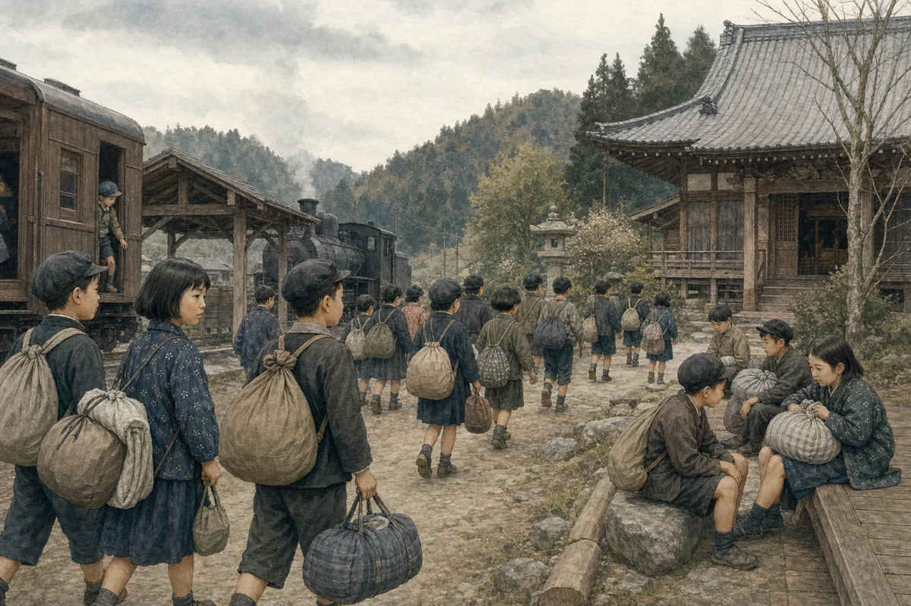
1944年になると、空襲から都市の子どもたちを守るため、小学生を地方の寺などへ集団で避難させる学童疎開が行われた。親元を離れての生活は、幼い子どもたちにとって心細いものだったはずだよ。また1941年には、尋常小学校が国民学校という名前に変わり、天皇に尽くす国民を育てることが教育の目的にされていったんだ。
4植民地の皇民化政策
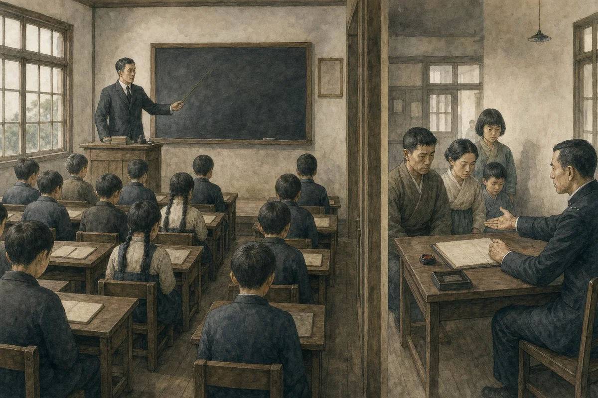
日本の植民地だった朝鮮や台湾では、人々に日本語を使わせたり神社に参拝させたりして、無理やり「日本人」にしようとする皇民化政策が進められた。1940年には、朝鮮の人々に日本式の姓名を名乗らせる創氏改名も行われたんだ。自分たちの名前や言葉を奪われるというのは、想像以上につらいことだったんじゃないかな。
終戦への道
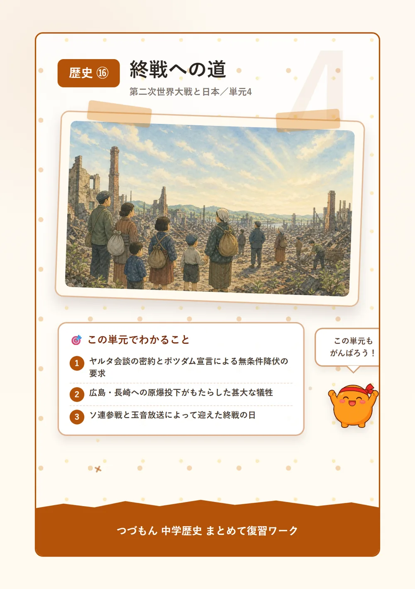
1ヤルタ会談とポツダム宣言
1945年2月、アメリカ・イギリス・ソ連の首脳はヤルタ会談を開き、ドイツ降伏の3か月後にソ連が日本と戦争を始めることを、秘密のうちに約束していたんだ。同年7月には、アメリカ・イギリス・中国が日本に無条件降伏を求めるポツダム宣言を発表したよ。でも日本はこれをすぐには受け入れず、無視を続けてしまったんだ。
2広島と長崎への原爆投下
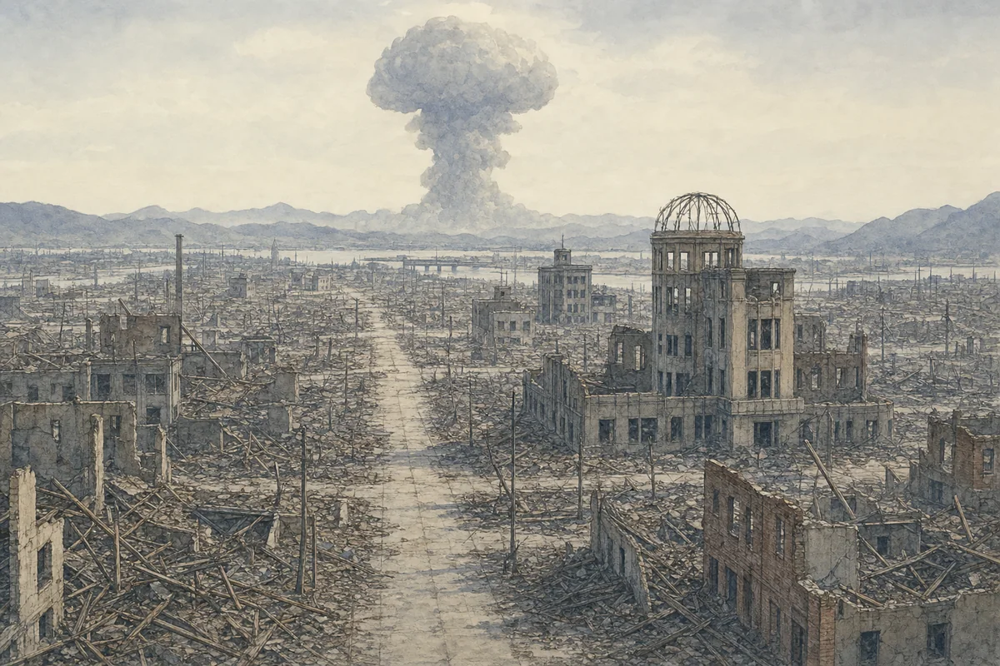
日本がポツダム宣言を無視し続けたことで、アメリカは1945年8月6日、広島に人類史上初めてとなる原子爆弾を投下した。この爆撃で約14万人もの命が奪われたんだ。さらに8月9日には長崎にも原爆が投下され、約7万人が犠牲になった。一発の爆弾がこれほど多くの命を奪ってしまったという事実を、私たちはしっかり心に刻んでおく必要があるね。
3ソ連参戦と玉音放送
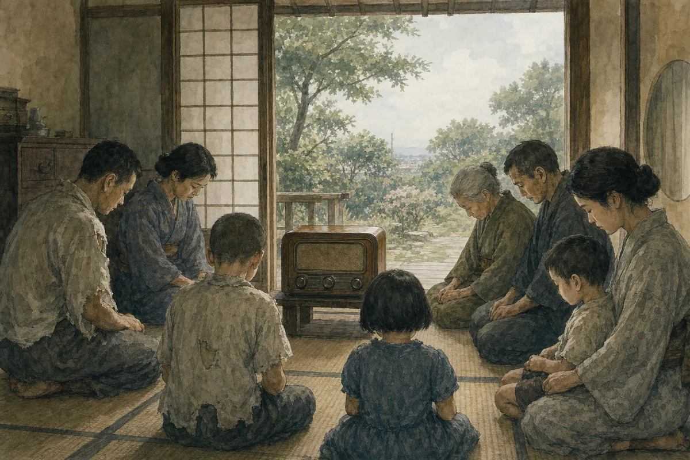
8月8日、ソ連はヤルタでの秘密の約束にしたがい、日ソ中立条約を破って満州に攻め込み、日本への参戦に踏み切った。次々と追いつめられた日本は、8月15日についにポツダム宣言の受け入れを決断し、昭和天皇がラジオで国民に終戦を伝える玉音放送が行われたんだ。こうして、多くの犠牲を出した長い戦争が、ようやく終わりを迎えたんだよ。